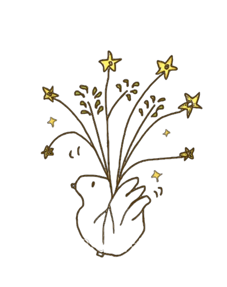
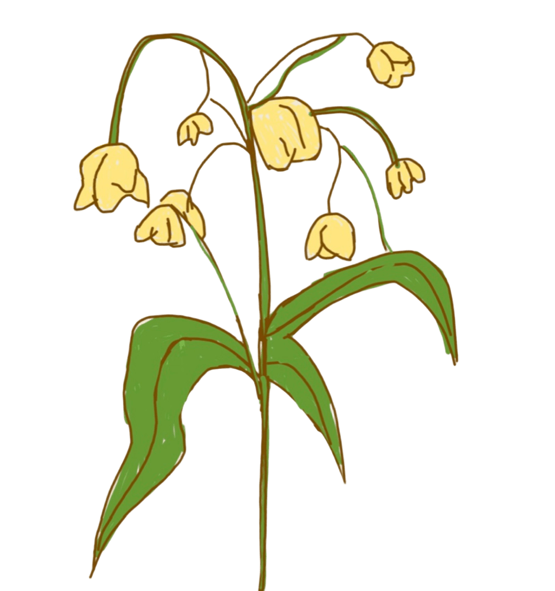
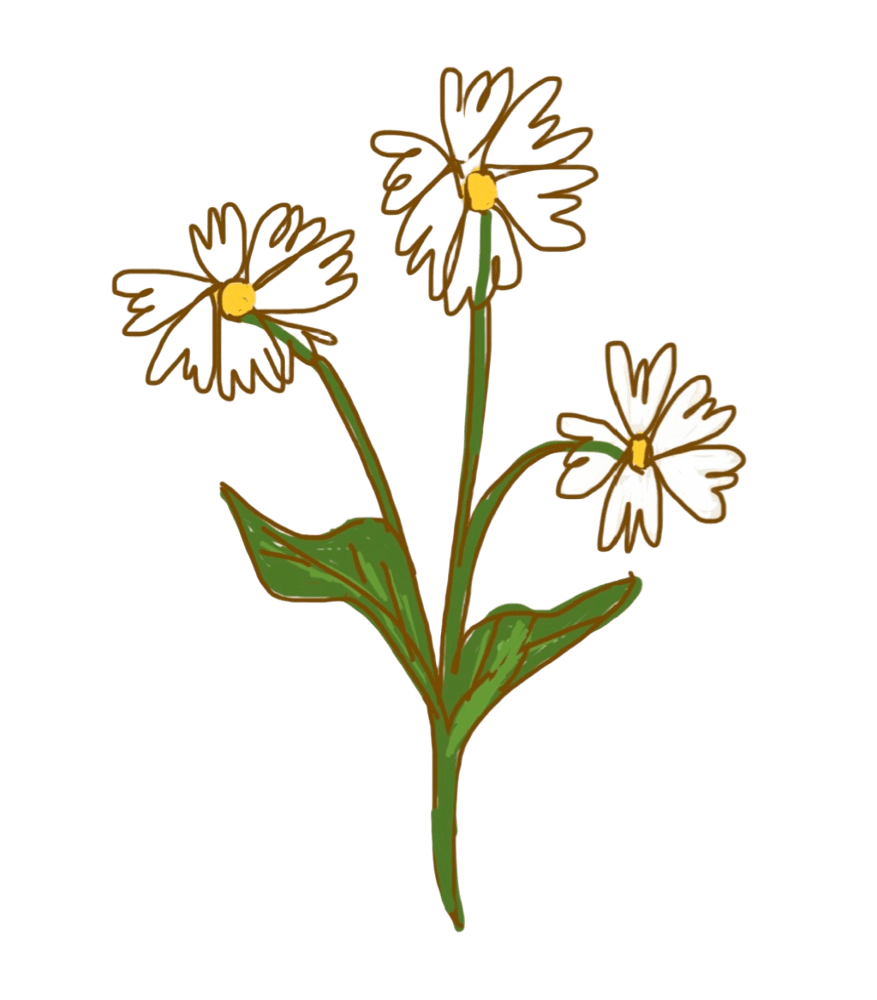
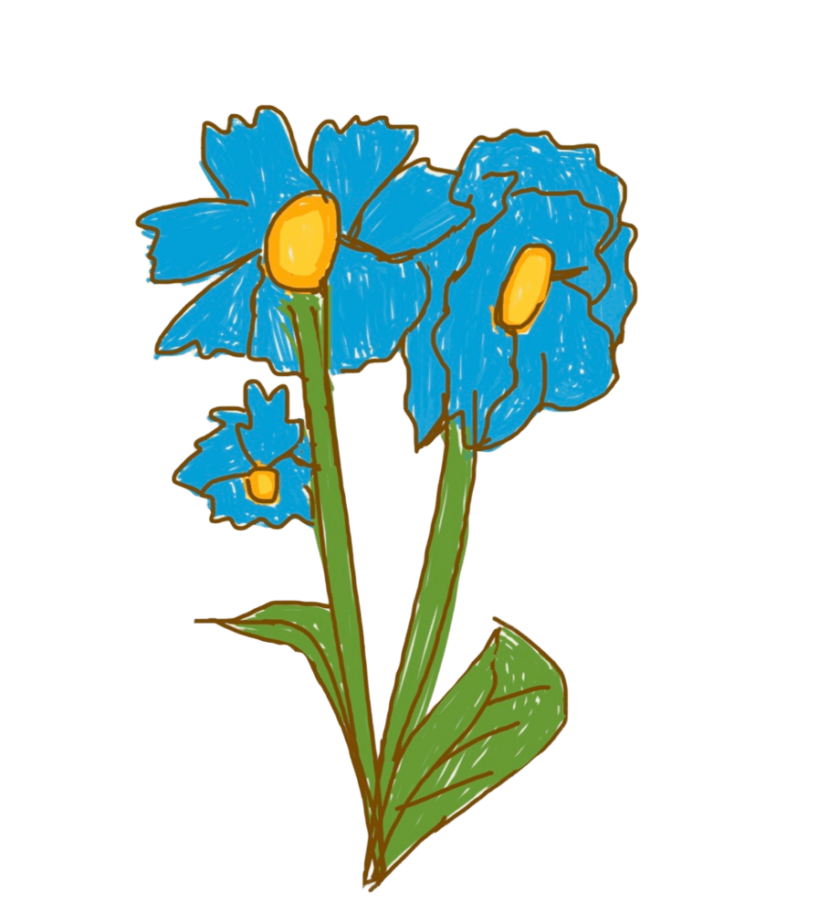

ABOUT US

每一份真心，都值得被溫柔地傳遞
底部的花瓶，是由心臟與鳥所融合而成。
心臟象徵人的真心與情感，是每一份祝福的起點；
鳥，來自古代「傳遞訊息」的意象，代表將內心的情感與思念送達他人。
盛放在其上的花朵，以星星的形式呈現，象徵願望、希望與指引。
願收到花的人，都能感受到這份溫暖 ☆
賴又德
Layout / Animation Design
在「花予祝願所」專案中，我主要負責動畫與動態交互的開發。這段過程讓我體會到，好的動畫不只是裝飾，更是導引使用者情感的關鍵。我利用 CSS Transition 與 Transform 實作了側邊欄的滑入效果，並結合 JavaScript 監聽滾動事件，讓商品元件在進入視野時以優雅的位移與漸變呈現，營造出品牌溫潤且療癒的視覺調性。開發過程中最具挑戰的是購物車動畫與圖片輪播系統。我必須精確控制動畫的時間曲線，確保動作流暢而不生硬，並解決多個動畫並發時的層級關係。透過反覆除錯與效能優化，我學會了如何平衡視覺美感與前端效能。這次作業讓我深刻理解到，細膩的動畫細節能大幅提升使用者體驗，讓靜態的網頁轉化為具有靈魂的動態藝術。

洪憲緯
JavaScript / Interactive Logic
這次的期末專題讓我深刻體會到 JavaScript 的魅力，它能將平庸的靜態網頁變得活靈活現。在開發過程中，AI 成了最強大的助手，只要指令清晰，就能省去大量撰寫基礎程式碼的時間。不過，我覺得這份專案的挑戰在於系統整合，要將會員、商品與購物車系統同時塞進同一個網站，非常考驗程式架構與整理技術。最後，網站上傳至Github上後，有超多路徑上的問題（因為網頁前綴的不同，導致有時候會跳轉到錯誤的網站而導致404），期末報告超多人有404的問題我看的是不亦樂乎ww

卓恩多
Picture / Content Structuring
我主要擔綱商品企劃的項目，針對每一款花卉單品撰寫專屬的產品理念，試圖透過感性的文字，在螢幕背後建立起花朵與顧客之間的情感連結，將產品從單純的植物轉化為情感的載體。而程式實踐的部分，我負責將這些文字與圖片轉譯為流暢的視覺體驗，讓長篇的商品描述在閱讀時具備良好的易讀性，使整體介面呈現出花店應有的優雅與寧靜調性。我學會了如何平衡視覺美感與使用者需求，不僅提升了前端與資訊架構的技能，更能從市場角度優化使用者體驗。

陳柏妤
Frontend UI / CSS Design
在這次期末專案中，我負責前端設計，包括 HTML、CSS 的版面排版、測驗功能的製作，以及手繪插圖的設計。透過修改程式碼就能即時改變畫面，並結合自己喜歡的主題風格，讓我能把想像轉化為實際呈現，也讓設計過程變得更加有趣。在製作過程中，我逐漸理解 HTML 檔案與路徑結構的重要性，也更清楚 JavaScript 邏輯如何影響頁面導向與功能運作。與期中相比，我在 CSS 排版與細節調整上有明顯進步，能更有效地控制間距、對齊與整體版面。整體而言，這次專案不只是完成一個網站，更讓我在技術與設計整合上有實質成長，也建立了更多面對問題與解決問題的信心。